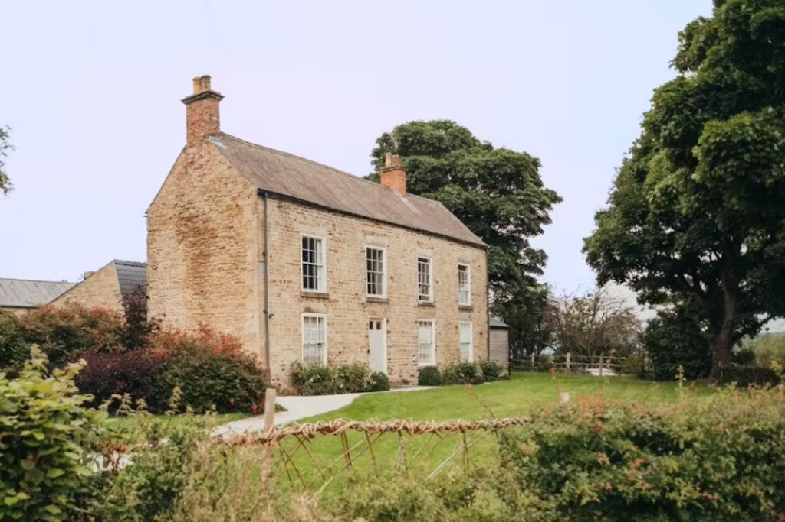

We're getting married!
It's happening on Saturday 16th November 2024 at 3pm
Venue
The ceremony and reception will be held at Manor Oaks House, it's all in one place, how convenient!
Manor Oaks House is an 18th century farm house with modern extension set in a private cottage garden. The surrounding grounds house the ruins of the Tudor Sheffield Manor Lodge
✨Vibe✨
At our wedding we want everyone to look lovely, but please don't feel you have to buy anything new for our wedding (or why not buy something second hand?)
Our wedding will be in November, a month not known for its warm weather, so please bring appropriate warm layers for if you spend any time outside.
Food choices (all vegetarian/vegan) and gift list will be available in the coming months.
🚉 Transport & Accomodation 🛏️
Our recommondation is that you travel to Sheffield via train (or car), stay in a hotel in Sheffield city centre and get a taxi to/from the venue.
The venue is a 10 minute drive or taxi ride to the venue from the city centre. There's plenty of parking at the venue. You can get a taxi with Veezu, Uber or Bolt.
There are lots of hotels in Sheffield City Centre, we suggest that you stay Friday and Saturday night, have a nice weekend in Sheffield. However, some hotels may offer early check-in which would allow for staying only one night.
You can find some hotel recommendations on the map below. You could also have a look on AirBnB